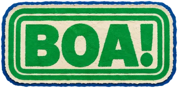
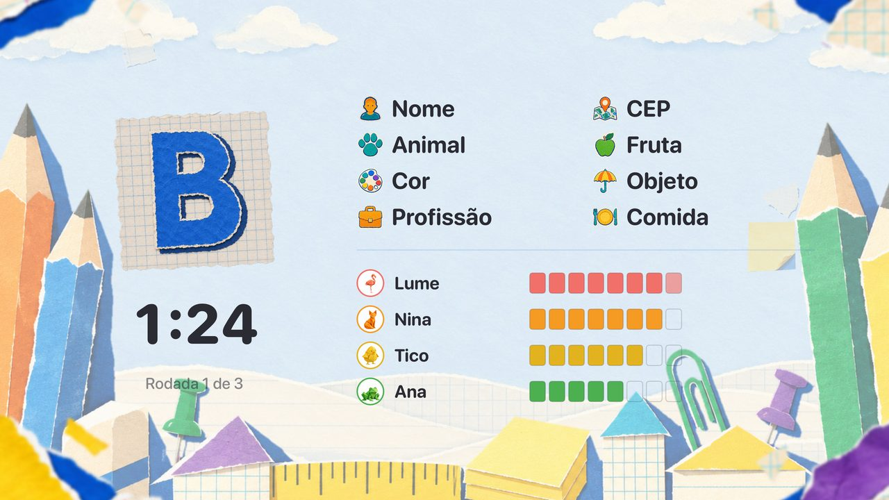
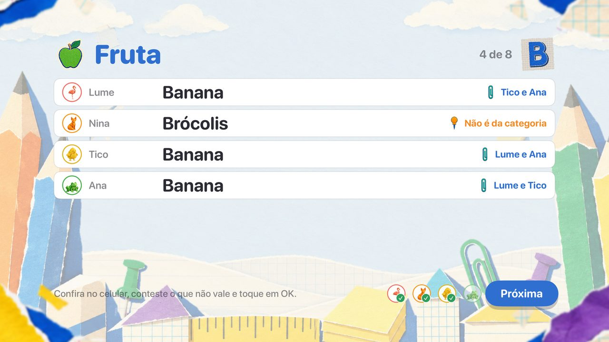
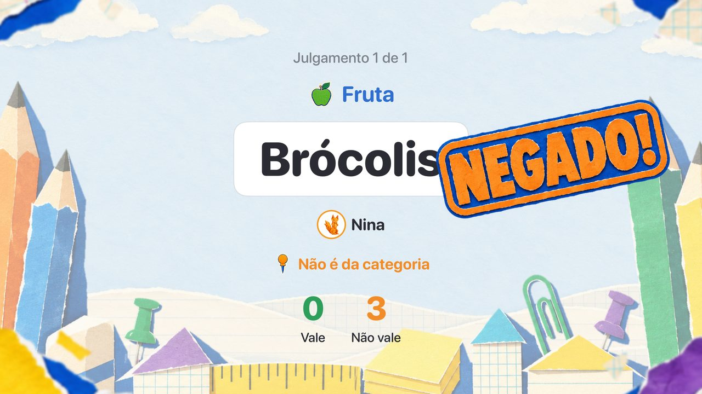
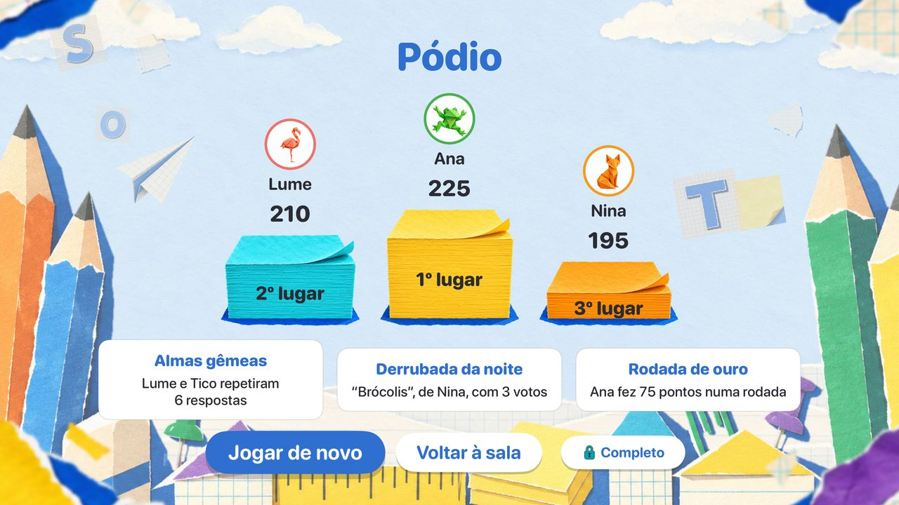
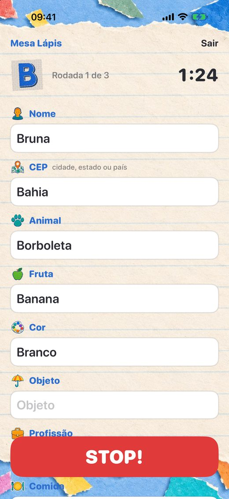
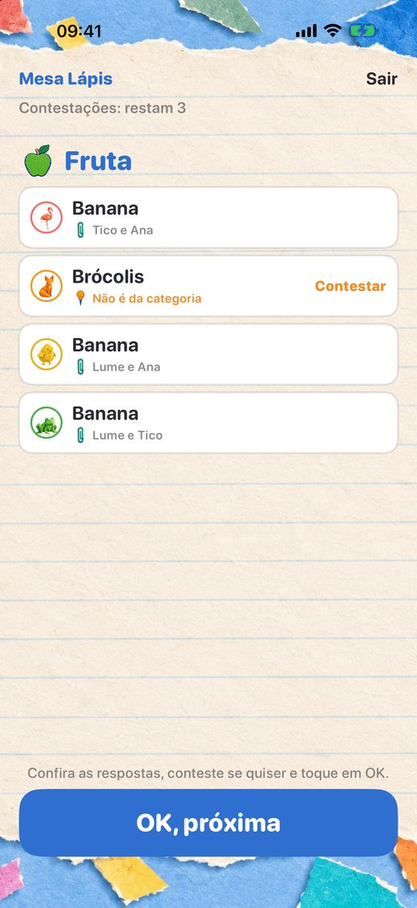
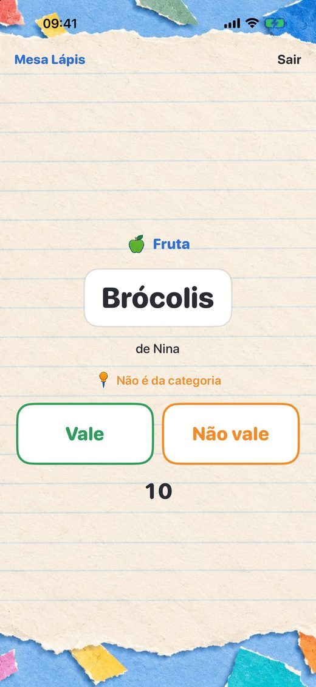

Uma letra, as categorias e um STOP!
O Stop (ou Adedonha) de sempre, para jogar com a família e os amigos na mesma sala. Sem papel, sem caneta e sem fazer contas.

A TV é a mesa
A Apple TV, ou um iPad, sorteia a letra, marca o tempo, revela as respostas e soma os pontos, para todo mundo ver junto.
O celular é a sua folha
Cada um escreve em segredo no próprio iPhone ou iPad. Entrar na mesa leva segundos: sem conta, sem internet, só o mesmo Wi‑Fi.

O grupo decide
Achou uma resposta estranha? Conteste pelo celular. Todo mundo vota, e a mesa carimba: BOA! ou NEGADO!

Stop, Stop! Completo
Uma compra destrava a sala inteira: mais de 50 categorias, os modos Surpresa e Relâmpago, todos os ajustes e as suas próprias categorias.







Como jogar
Abra o Stop, Stop! na Apple TV e escolha Nova partida (no iPad, toque em Ser a mesa). Cada jogador abre o Stop, Stop! no iPhone ou iPad, escreve o nome e toca na mesa. Quando todos estiverem prontos, a partida começa.
- A mesa sorteia a letra.
Todo mundo vê a letra na TV, e as categorias aparecem no celular de cada um: Nome, CEP, Animal, Fruta, Cor, Objeto, Profissão e Comida. - Todos preenchem em segredo.
Cada resposta começa com a letra sorteada. Quem preencher o mínimo pode apertar STOP!, e as respostas de todos travam segundos depois. Se o tempo acabar antes, vale o que estiver escrito. - A mesa revela as respostas.
Categoria por categoria. Respostas iguais se juntam, e a letra errada já sai zerada. Achou uma resposta estranha? Toque em Contestar no celular. - O grupo vota.
Cada resposta contestada vai a voto: Vale ou Não vale. Ela cai com mais da metade dos votos de quem pode votar (e pelo menos 2). Empate mantém a resposta. Quem escreveu pode desistir: Tudo bem, não vale. - Os pontos.
10 para uma resposta só sua, 5 para uma resposta igual à de alguém e 0 para vazia, letra errada ou derrubada.
No fim das rodadas, o pódio. Na dúvida, vale!
Ajuda
Tudo para uma boa partida.
Do que preciso para jogar?
De uma mesa, que é a Apple TV ou um iPad, e de um iPhone ou iPad com o Stop, Stop! para cada jogador, todos no mesmo Wi‑Fi. Não precisa de internet nem de conta. Quem não tem aparelho joga em dupla com alguém.
Quantos jogadores?
De 2 a 8.
O iPad pode ser a mesa?
Pode. Abra o Stop, Stop! no iPad, toque em Ser a mesa e deite o iPad onde todos vejam. Ele faz tudo o que a Apple TV faz, por toque.
Meu celular não acha a mesa.
- Confira se o celular e a mesa estão no mesmo Wi‑Fi. Redes de convidados, alguns hotéis e alguns roteadores em malha não deixam os aparelhos se verem.
- O Stop, Stop! precisa da permissão de Rede Local para achar a mesa: abra Ajustes › Privacidade e Segurança › Rede Local e ative o Stop, Stop!.
- A mesa precisa estar aberta: na Apple TV, escolha Nova partida; no iPad, Ser a mesa.
Quando posso apertar STOP!?
Quando tiver preenchido o mínimo de categorias da partida: aí o botão STOP! se acende no celular. Depois do STOP!, os outros ainda têm uns segundos para terminar a palavra que estavam escrevendo.
Alguém saiu no meio da partida.
O lugar dele fica esperando, com os pontos. Basta abrir o Stop, Stop! de novo no mesmo aparelho e tocar na mesa.
O que é o Stop, Stop! Completo?
Uma compra única que destrava a sala inteira: basta a mesa ou um dos jogadores ter o Completo, e todos jogam com ele. Traz mais de 50 categorias em temas, os modos Surpresa (categorias novas a cada rodada) e Relâmpago (4 categorias, 30 segundos, 5 rodadas), rodadas, tempo e regras do seu jeito, as suas próprias categorias, criadas no celular, e os conjuntos de ajustes guardados na mesa. Compre na tela inicial da Apple TV ou no celular. Com o Compartilhamento Familiar, vale para toda a família.
Como restauro a compra?
Abra a tela do Stop, Stop! Completo e toque em Restaurar compras. A compra fica na sua conta Apple e vale na Apple TV, no iPhone e no iPad.
Como saio da mesa?
Na Apple TV, aperte Menu (ou Voltar) no controle. No celular, toque em Sair, no alto da tela.
Quais idiomas?
Português e inglês, pelo idioma do aparelho. As letras e as categorias seguem o idioma da mesa.
Alguma coisa não funciona.
Feche o Stop, Stop! na mesa e nos celulares e abra de novo. Se o problema continuar, escreva para nós com os modelos dos aparelhos e as versões do sistema. Lemos todas as mensagens.
Fale com a gente
Dúvidas, ideias de categorias ou um problema que escapou? Queremos saber.
stopstop@alysoft.com.br